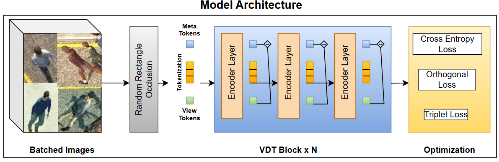

Projects I'm Proud Of
AI-Driven Multi-Drone Person Detection and Re-Identification (Capstone)
Python, PyTorch, timm, Blender, MATLAB, AWS SageMaker
- Processed multi-perspective CARGO dataset to build advanced person detection algorithms.
- Engineered hybrid transformer-based models (ViT, VDT architectures).
- Built synthetic data generation pipeline using Blender and MATLAB.

Image Classification using PyTorch
Python, PyTorch, NumPy, Matplotlib
- Designed a custom CNN for CIFAR-10 image classification.
- Achieved competitive validation and test accuracy using Adam optimizer.

Unsupervised Multi-Table Entity Matching
Python, Sentence-BERT, DBSCAN, Scikit-learn
- Developed adaptive entity embedding techniques using Sentence-BERT.
- Optimized clustering with Approximate Nearest Neighbor Search (ANNS) and DBSCAN.

Drug-Drug Interaction Prediction using Graph Neural Networks
Python, Graph Neural Networks
- Developed a self-supervised autoencoder model for learning drug molecular representations.
- Designed a supervised neural network to predict drug-drug interactions.